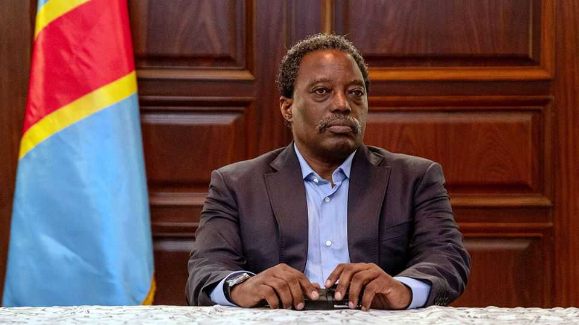

Joseph Kabila moves against his successor in Congo
By seeking to unseat Félix Tshisekedi as president, he could upend politics

Oct 22nd 2026
Back in 1974 Kinshasa, the capital of what is now the Democratic Republic of Congo, hosted a lavish boxing match known as the “Rumble in the Jungle”. Today the city is gripped by a different heavyweight clash. In one corner is Félix Tshisekedi, the president. In the other is Joseph Kabila (pictured), an ex-president, who on October 12th stunned the country by announcing that he would lead a rebel coalition against his successor “by all means, including the use of force”.
Mr Kabila’s move threatens to worsen the conflict in the war-riven east. It also complicates Mr Tshisekedi’s bid to change the constitution to stay in power past the end of his second term in 2028. If either man can land a knockout blow it will shape the future of Africa’s second-largest country—of great interest to America, given its quest for critical minerals.
The feud has a long history. The latest chapter began in 2019, when Mr Tshisekedi was declared the winner of an election with more rigging than a giant sailboat. In the aftermath he struck a power-sharing deal with Mr Kabila that recognised the former president’s majority in parliament. That pact was torn up acrimoniously in 2020. Kabila loyalists were purged and Mr Kabila ultimately went into self-imposed exile, where he complained privately to other African leaders about what he saw as a power grab by an illegitimate successor.
Events in Kinshasa were inflamed by the conflagration in the east. In 2021 M23, a Rwandan-backed force, resurfaced after a dormant eight years, taking Goma and Bukavu, two regional capitals, in early 2025. To Mr Kabila, who was born in the east, the conflict was a reaction to his successor’s “tyrannical regime”. To Mr Tshisekedi, who won re-election less dubiously in 2023, the war was an invasion by Rwanda. When Mr Kabila moved to Goma in 2025, Mr Tshisekedi saw confirmation that his successor was a Rwandan stooge. In September 2025 Congo sentenced Mr Kabila to death in absentia for treason.
Over the next year Mr Kabila and M23 denied any links. “Kabila is not our boss,” Corneille Nangaa, the head of the group’s political arm, told The Economist in May. But he is now. Mr Kabila’s coalition includes M23. He wants to use the rebellion in the east to bring change to Kinshasa.
Will he succeed? NGOs in Goma are watching for troop movements south to the mineral-rich Katanga region. Yet M23’s fighters are more reluctant to expand the battlefield than their political peers. Rwanda has shown no sign of wanting to broaden the conflict either. It may have endorsed the elevation of Mr Kabila because it makes the conflict across the border look more of an intra-Congolese fight. Uganda, another player, wants to preserve a deal that lets it station its forces in the north-east of Congo. America, which put sanctions on Mr Kabila this year for his links to M23, is unlikely to welcome any effort to destabilise the regime of Mr Tshisekedi, with whom it has struck mineral deals.
Other Congolese opposition figures may prove decisive. An unwieldy coalition known as C64 (after the 64th article of the constitution rather than the popular 1980s computer) opposes Mr Tshisekedi’s power grab. Some previously called for Mr Kabila to be included in a “national dialogue”. But supporting him will be harder now.
Mr Kabila’s best hope might be that Mr Tshisekedi is so spooked that he becomes more paranoid and autocratic. That could prompt strategic errors—some in Kinshasa say the death sentence for Mr Kabila is an example of such a mistake—and prompt a backlash by political elites. Mr Tshisekedi is already under pressure. On October 14th Belgian authorities raided his relatives’ houses in connection with an investigation into money-laundering.
That would amount to Mr Kabila adopting the political equivalent of the “rope-a-dope” strategy used by Muhammad Ali in 1974. By leaning on the ropes to absorb blows, Ali let his opponent, George Foreman, punch his way to exhaustion. Then he delivered a knockout blow. “It’s not bragging if you can back it up,” Ali apparently said. Congo is waiting to see whether Mr Kabila can back it up, too. ■
Sign up to the Analysing Africa, a weekly newsletter that keeps you in the loop about the world’s youngest—and least understood—continent.